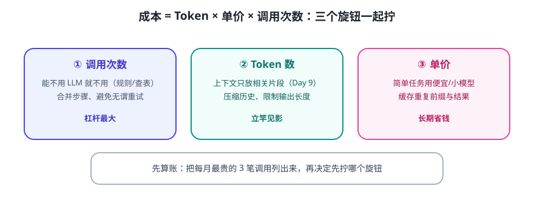

LLM 按 Token 计费、按调用耗时。所以 Agent 的成本 ≈ Token 数 × 单价 × 调用次数，延迟 ≈ 调用次数 × 单次耗时。优化就是分别压这三个乘数。

先算账，再优化
别凭感觉。给每个功能记一笔账：
单次成本 ≈ (输入 Token × 输入单价 + 输出 Token × 输出单价) × 每月调用次数 把“最贵的三笔调用”列出来 → 优先优化它们
六大优化手段（按性价比排序）
| 手段 | 原理 | 效果 |
|---|---|---|
| ① 少调几次 | 合并/删减没必要的模型调用（能用规则就别上 LLM） | 成本延迟双降，最大杠杆 |
| ② 少传点 Token | 上下文只放相关部分（Day 9 三板斧） | 输入费用大降、更快 |
| ③ 缓存 | 相同前缀/相同问题命中缓存（Prompt Caching、结果缓存） | 重复场景省 50–90% |
| ④ 用便宜模型分层 | 简单任务用小/便宜模型，难的才用强模型 | 整体成本大降 |
| ⑤ 模型参数调优 | 控制输出长度上限、合适温度 | 防“话痨”白烧钱 |
| ⑥ 并发与批处理 | 独立请求并行/合并成批量调用 | 吞吐提升（注意限流） |
三个容易忽略的“隐性成本”
- 重试放大：失败重试 3 次 = 成本 ×3。先提高一次成功率，再谈重试。
- 日志里放大文本：把完整对话打进日志，日志存储和检索也会贵起来。存摘要/结构化字段。
- 评测跑分：50 条测试 × 每次 3 步 × 迭代 20 版，成本可观。评测集也分“快筛”和“全量”。
💡 性能与体验：用户感知的“快”，一半来自工程（并发、流式输出、缓存），一半来自心理（先回“收到，正在处理”再异步干活）。体验优化不只有“跑得快”。
✍️ 今日练习（约 12 分钟）
- 给你毕业设计画一条主流程，标出每次模型调用，数一数总调用次数。
- 找出其中“其实不需要 LLM”的步骤（能用规则/查表替代的），至少 1 处。
- 给最贵的调用设计一个“缓存键”：什么情况下可以复用上次结果？
📌 今日小结
成本公式Token × 单价 × 调用次数；先算账再优化
最大杠杆少调几次 > 少传 Token > 缓存 > 模型分层
隐性成本重试放大 · 日志膨胀 · 评测跑分
性能观并发/流式/缓存 + 异步体验设计
明天预告：Agent 的“眼睛和耳朵”——多模态 Agent 初探：图片、语音与屏幕操作。